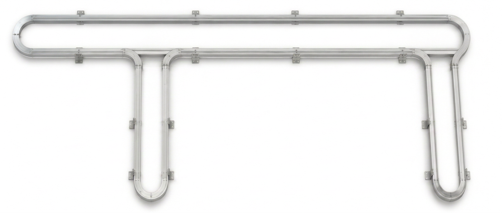

This overview uses the exact 2-D Magnemotion master geometry as the track reference.

| Path | Name | Color | Description |
|---|---|---|---|
| 1 | Mold 1 Entry/Exit | Cyan | Right vertical connector between top and bottom rails |
| 2 | Mold 1 | Red | Right U-shaped mold spur |
| 3 | Cleanout | White/Gray | Bottom return rail |
| 4 | Mold 2 | Orange | Left U-shaped mold spur |
| 5 | Mold 2 Entry/Exit | Magenta | Left vertical connector between top and bottom rails |
| 6 | Process | Yellow/Green | Top main rail |